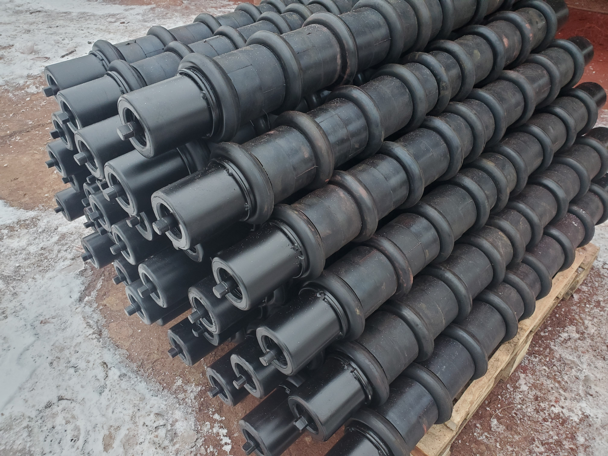
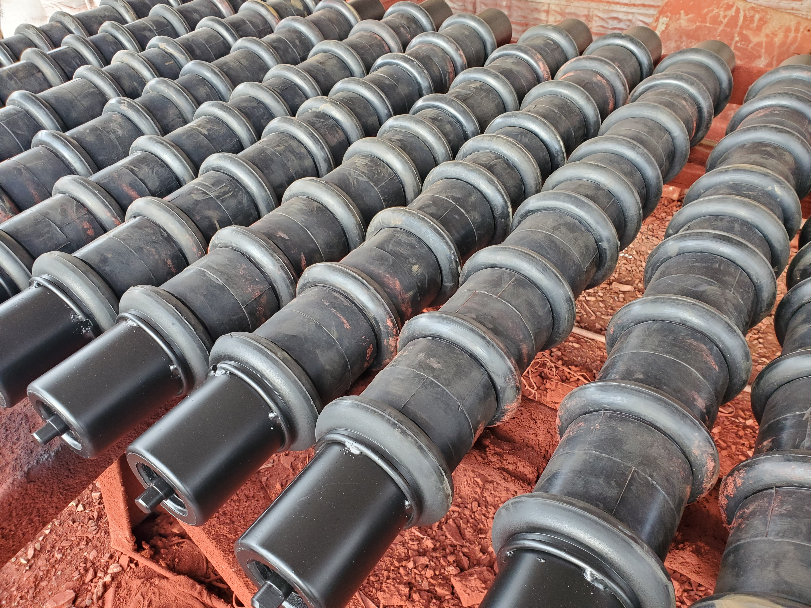
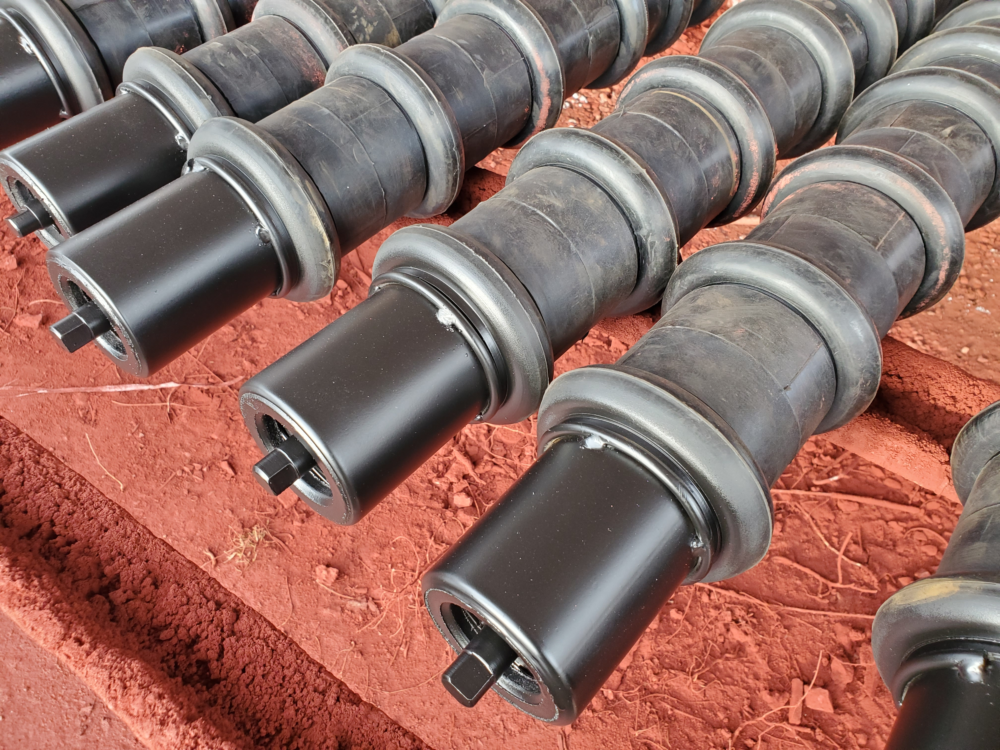
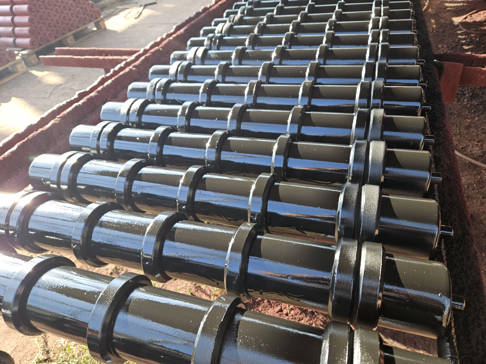
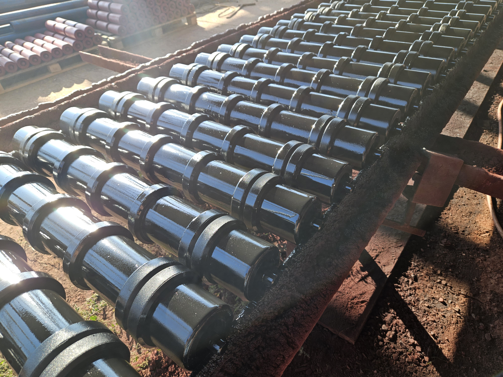

ролики футеровані
Футеровані ролики в промислових системах виявляються надзвичайно важливим елементом для підтримки оптимального функціонування конвеєрів. Їхні технічні особливості, такі як спеціальні покриття та оббивки, грають критичну роль у зниженні тертя, а отже, і витрат енергії.
Це особливо важливо в умовах високих температур чи агресивних середовищ, де футеровані ролики демонструють свою ефективність у захисті від корозії та зносу. Не менш важливою є їхня роль у забезпеченні стабільності під час переміщення вантажів, що безпосередньо впливає на безперебійність та безпеку виробничих процесів.


Галерея









більше